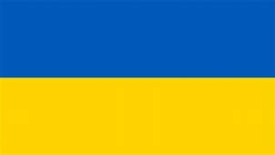
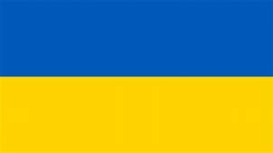

Що таке елетронне урядування?
Демократизація публічного управління, у тому числі, введення в електронний уряд електронної демократії, обумовило появу нового терміну – «електронне урядування». Щодо визначення електронного урядування застосовуються різні підходи, кожен з яких розкриває його особливості в залежності від сфери застосування. При цьому найбільш вживаними є такі:
- технократичні, в яких електронне урядування розглядається як одна з базових технологій інформаційного суспільства разом з такими технологіями, як електронна комерція, елек-тронні освіта, культура, охорона здоров’я, наука, охорона навколишнього середовища тощо, або як один з етапів впро-вадження ІКТ у державне управління (комп’ютеризація–інформатизація–електронне урядування) як відповідна організаційно-технічна система;
- теоретичні, в яких електронне урядування розглядається як відповідна ідеологія, концепція, теорія або як одна з сучас-них форм державного управління, що конкурує або базу-ється на таких підходах, як новий державний менеджмент, політичні мережі, належне урядування («good governance»), «відкритий уряд», синергетичний та новий інституційний підходи тощо.
Електронне урядування (е-урядування):
- форма організації державного управління, що сприяє підви-щенню ефективності, відкритості та прозорості діяльності органів державної влади та органів місцевого самовряду-вання з використанням ІКТ для формування нового типу держави, орієнтованої на задоволення потреб громадян;
- оптимізація процесу надання адміністративно-соціальних послуг, політичної участі громадян у державній розбудові шляхом зміни внутрішніх і зовнішніх відносин за допомо-гою технічних засобів, Інтернету та сучасних засобів масо-вої інформації;
- система взаємодії органів державної влади з населенням, що будується на широкому застосуванні інформаційних техно-логій з метою підвищення доступності та якості державних послуг, зменшення строків їх надання, а також зниження адміністративного навантаження на громадян та організації щодо їх отримання;
- електронне урядування є не лише модернізацією всієї сис-теми державного управління, але й налагодженням активної взаємодії органів державної влади з громадянами за допо-могою сучасних інформаційно- комунікаційних технологій;
- виикористання інформаційних і комунікаційних технологій для підвищення ефективності, економічності та прозорості уряду та можливості громадського контролю за ним.
Етапи розвитку електронного урядування
- На першому етапі створюються веб-ресурси різних міністерств і відомств, що містять інформацію про їхню місію і напрямки діяльності. Сайти державних органів, як правило, не підтримуються централізовано і не об'єднуються в єдиний портал.
- На другому етапі з'являються перші елементи інтерактивності (наприклад, відправлення питань і одержання відповідей громадян за допомогою електронної пошти). Постійно публікуються новини про діяльність державних органів влади.
- Третій етап характеризує поява повноцінної інтерактивності — можливості здійснювати операції (сервіси) в режимі онлайн (наприклад, сплатити штраф, замовити паспорт, продовжити дію деяких ліцензій і патентів тощо). Така конкретизація роботи електронного управління, що полягає вже не стільки в інформуванні, скільки в обслуговуванні, припускає створення спеціальних сайтів для підтримки цих сервісів не тільки для центральних, але і для міських і навіть районних органів влади.
- Четвертий етап — створення об'єднаних порталів різних відомств і служб, через які можна здійснювати будь-які види трансакцій, для яких раніше було потрібно звертатися безпосередньо в державний орган. Через регіональні портали стає можливою реєстрація підприємств, оформлення фінансових документів, легалізація іноземних документів тощо. З'являються регіональні портали, що поєднують у собі як увесь спектр державних послуг, так і послуги недержавного сектора — підключаються системи електронної комерції, інтернет-банкінгу.
- На п'ятому етапі відбувається створення електронної системи державного управління на основі єдиних стандартів, а також урядового порталу як єдиної точки доступу до всіх послуг — і для громадян, і для бізнесу. Більшість фахівців вважає, що найвищим ступенем розвитку електронної демократії є запровадження електронної системи волевиявлення (електронного голосування).